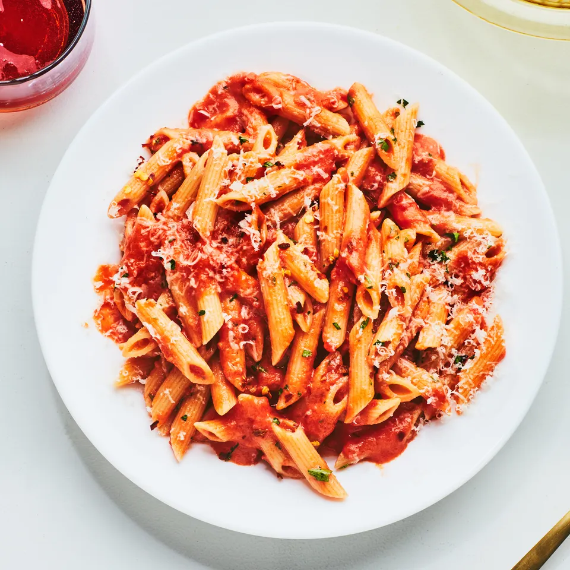

Home
Penne alla Vodka

Description:
I found this dish on Epicurious.
I found the description on the website is a bit vague, so I have added more details :)
It is a simple, flavorful, around 30min dish.
Ingredients:
- Salt
- 1 35-ounce can Italian chopped tomatoes (better with San Marzano brand)
- 1 pound penne
- 1/4 cup extra-virgin olive oil
- 1/2 cup heavy cream
- 2 tbsp unsalted buttler or olive oil for finishing sauce
- 2 to 3 tbsp chopped fresh Italian parsley
- Some freshley grated Parmigiano-Reggiano, or mazzarella cheese
Steps:
- Bring salted water to boil
- At the same time, in a saucepan, add olive oil with medium heat.
- Once olive oil is hot enought, add garlic. Stir until garlic are lightly browned.
- Slowly pour in a can of chopped tomatoes, be careful it will splash.
- When the water is boiling, add pasta.
- When the sauce is boiling, season with salt and pepper, as well as red chilli pepper.
- Pour in the vodka, stir for 2min. Then reduce heat to low, cover until pasta is ready.
- Pour in cream milk, give it a stir, and add in butter or olive oil.
- Pour in the penne, give it a good stir to make sure penne are coated with the sauce.
- Check seasoning, add salt and red pepper if necessary.
- When plating, sprinkle with cheese and parsley.